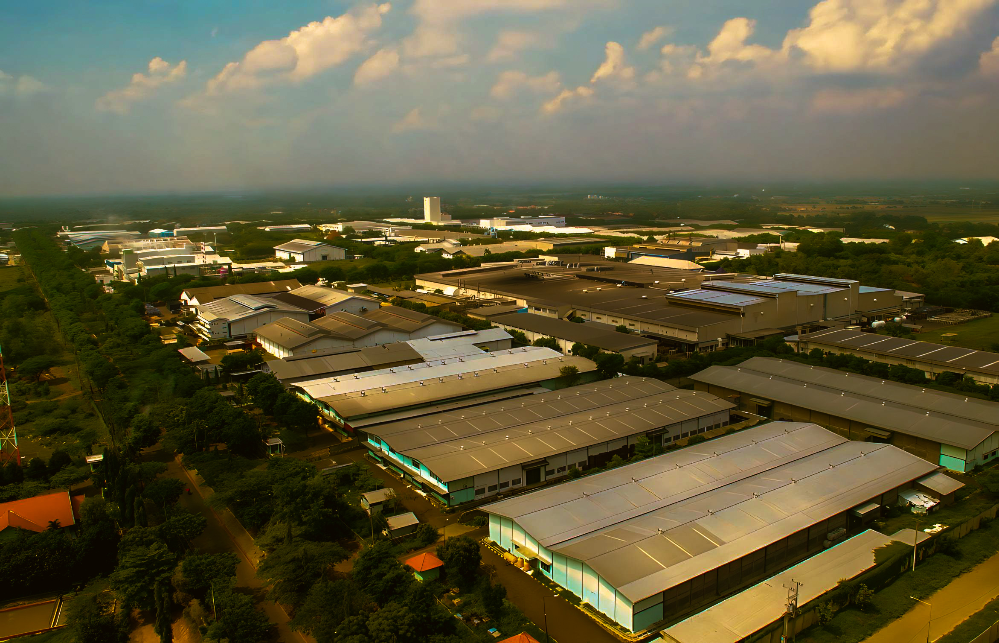
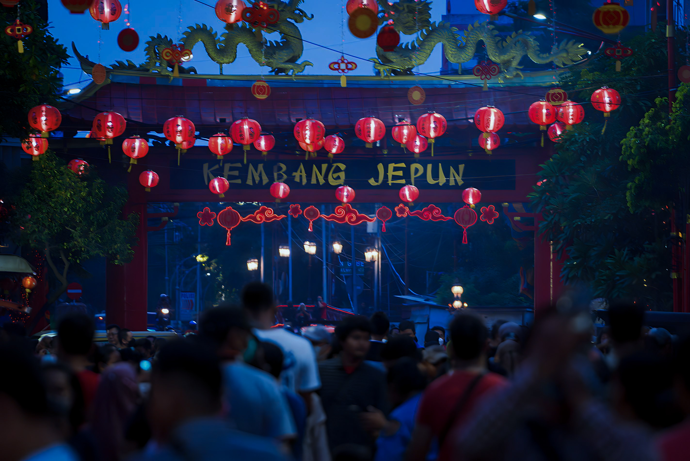
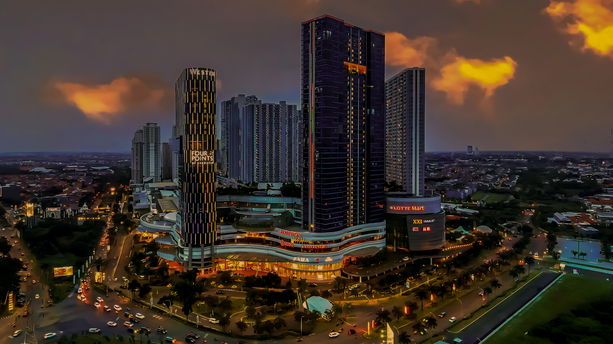
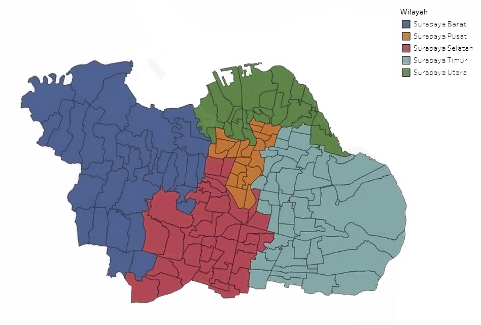
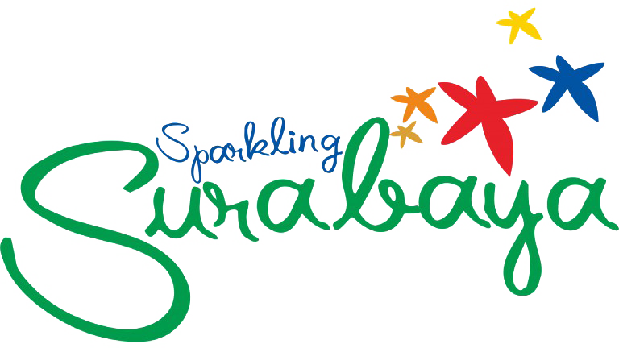

Surabaya Pusat adalah kawasan CBD (Central Business District) atau kawasan pusat bisnis di Surabaya. Destinasi wisata di tempat ini seperti Grahadi, Balai Pemuda, Patung Joko Dolog dan Museum Kapal Selam serta area Kalimas

Surabaya Selatan
Surabaya Selatan adalah salah satu pintu masuk kota Surabaya yang juga diwarnai dengan kawasan industri, atraksi wisata yang ditawarkan di kawasan ini adalah Kebun Binatang Surabaya dan taman – taman serta bangunan kuno yang ada di sekitar Jalan Raya Darmo.

Surabaya Utara
Surabaya Utara merupakan bagian dari Surabaya yang paling dekat dengan laut sekaligus adalah pusat kota Surabaya Tempo dulu. Kawasan ini sangat kental dengan nuansa budaya dan sejarah kota Surabaya.
Surabaya Timur
Surabaya Timur mempunyai pantai dan Jembatan Suramadu sebagai ikon pariwisatanya. Di kawasan ini juga terdapat Pantai Kenjeran, Patung Budha 4 Wajah dan Dewi Kwan Im, Taman Hiburan Rakyat dan Pusat IT terbesar di Indonesia bagian timur.

Surabaya Barat
Surabaya Barat, dimana di kawasan terdapat tempat tinggal, pusat belanja dan rekreasi dengan standar internasional. Di kawasan ini ada water park terbesar di Indonesia Timur, pusat kuliner yang lengkap dan area bermain golf dengan standar internasional.
Peta Surabaya

Sebagai kota terbesar kedua di Indonesia, Surabaya menawarkan suatu suasana kota metropolis berbeda dari kota besar lainnya yang ada di Indonesia. Surabaya menjadi kota yang nyaman dan menyejukkan bagi para wisatawan baik asing maupun domestik, dengan keberadaan taman kota yang tersebar di seluruh wilayah kota. Sebagai kota jasa dan perdagangan, Surabaya telah menjadi pusat supplier dan distributor bagi banyak komoditas jasa dan perdagangan untuk Indonesia Wilayah Timur. Maka dari itu Surabaya juga dikenal sebagai kota bisnis. Semua fasilitas untuk berbisnis dan berusaha, seperti keperluan rapat perusahaan sampai dengan pameran tingkat dunia bisa diadakan di Surabaya, karena sudah terdapat fasilitas yang modern untuk keperluan MICE (Meeting, Incentives, Conference and Exhibition).
Sebagai kota wisata, sejak akhir tahun 2005, Surabaya telah berkembang menjadi kota wisata yang berbasis pada wisatawan bisnis. Dengan keberadaan Surabaya Tourism Promotion Board yang bersinergi dengan Dinas Budaya dan Pariwisata kota Surabaya, maka pembenahan pariwisata kota Surabaya mulai dilakukan secara aktif dan membuahkan hasil yang sangat positif. Sejak akhir tahun 2005, dimulai dari rapat perdana di Surabaya Tourism Promotion Board, slogan “Sparkling Surabaya“, mulai diperkenalkan di publik Surabaya.

Konsep dan arti dari logo Sparkling Surabaya diambil dari berbagai potensi wisata kota Surabaya yang dilihat dari segi geografis dan karakter destinasi wisata masing – masing. Tulisan Sparkling Surabaya yang menggunakan warna biru menunjukkan bahwa Surabaya merupakan kota pesisir, sedangkan warna hijau menunjukkan bahwa Surabaya adalah kota yang mengedepankan green and clean. Warna hijau juga mewakili kondisi Surabaya yang punya banyak lapangan golf bertaraf internasional.
Warna bintang yang ada di atas tulisan Sparkling Surabaya, mempunyai arti sebagai berikut :
Surabaya Selatan Bintang warna emas mewakili kawasan Surabaya Selatan Sebagai salah satu pintu masuk kota Surabaya yang juga diwarnai dengan kawasan industri, atraksi wisata yang ditawarkan di kawasan ini adalah Kebun Binatang Surabaya dan taman – taman serta bangunan kuno yang ada di sekitar Jalan Raya Darmo. Surabaya Barat terletak di bagian barat kota Surabaya. Beberapa kecamatan di wilayah ini antara lain :
Wonokromo
Wonocolo
Wiyung
Karang Pilang
Jambangan
Gayungan
Dukuh Pakis
Sawahan
Surabaya Utara Bintang warna biru mewakili kawasan Surabaya Utara yang dekat dengan laut yang sekaligus adalah pusat kota Surabaya Tempo dulu. Kawasan ini sangat kental dengan nuansa budaya dan sejarah kota Surabaya. Atraksi wisata di daerah ini terdiri dari kawasan busaya seperti Kampoeng Arab, Masjid Ampel, Kawasan Pecinan, Kya Kya, Klenteng Boen Bio, Masjid Cheng Ho, House of Sampoerna dan banyak lagi bangunan cagar budaya di kawasan ini. Surabaya Utara terletak di bagian utara kota Surabaya. Beberapa kecamatan di wilayah ini antara lain :
Bulak
Kenjeran
Semampir
Pabean Cantian
Krembangan
Surabaya Timur Bintang warna kuning mewakili kawasan Surabaya Timur yang mempunyai pantai dan Jembatan Suramadu sebagai ikon pariwisatanya. Di kawasan ini juga terdapat Pantai Kenjeran, Patung Budha 4 Wajah dan Dewi Kwan Im, Taman Hiburan Rakyat dan Pusat IT terbesar di Indonesia bagian timur. Surabaya Timur terletak di bagian timur kota Surabaya. Beberapa kecamatan di wilayah ini antara lain :
Gubeng
Gunung Anyar
Sukolilo
Tambaksari
Mulyorejo
Rungkut
Tenggilis Mejoyo
Surabaya Barat Bintang warna orange mewakili kawasan Surabaya Barat dimana di kawasan terdapat tempat tinggal, pusat belanja dan rekreasi dengan standar internasional. Di kawasan ini ada water park terbesar di Indonesia Timur, pusat kuliner yang lengkap dan area bermain golf dengan standar internasional. Surabaya Selatan terletak di bagian selatan kota Surabaya. Beberapa kecamatan di wilayah ini antara lain :
Benowo
Pakal
Asemrowo
Sukomanunggal
Tandes
Sambikerep
Lakarsantri
Surabaya Pusat Bintang warna merah mewakili kawasan CBD (Central Business District) atau kawasan pusat bisnis di Surabaya. Destinasi wisata di tempat ini seperti Grahadi, Balai Pemuda, Patung Joko Dolog dan Museum Kapal Selam serta area Kalimas. Surabaya Pusat merupakan bagian pusat kota Surabaya yang wilayahnya antara lain :
Tegalsari
Simokerto
Genteng
Bubutan
Konsep utama dari Sparkling Surabaya adalah membuat Surabaya sebagai kota yang nyaman dan aman dengan berbagai fasilitas terbaik dan aktifitas warga kotanya yang selalu dinamis. Jadwal kegiatan yang berskala lokal, nasional dan internasional dan kegiatan yang bisa dilakukan oleh wisatawan lokal maupun asing di Surabaya membuat kota ini menjadi kota wisata yang layak untuk dikunjungi semua kalangan.